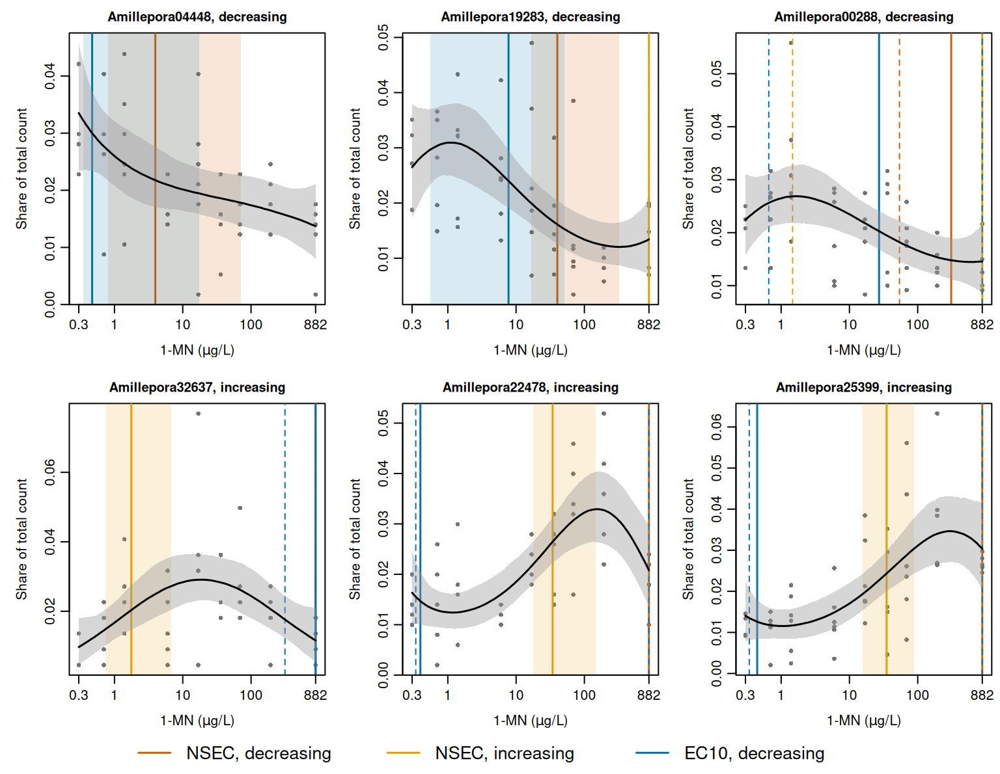

| Gene | Retained direction | Trials |
|---|---|---|
| Amillepora04448 | decreasing | 570 |
| Amillepora19283 | decreasing | 16,045 |
| Amillepora00288 | decreasing | 1,201 |
| Amillepora32637 | increasing | 221 |
| Amillepora22478 | increasing | 501 |
| Amillepora25399 | increasing | 357,533 |
This case study shows how NSECs and ECx values are estimated with toxval from a multivariate brm() fit, in which each response is fitted as a separate curve and some responses decrease with concentration while others increase. It also shows how toxval measures the size of an increase for a beta-binomial response whose number of trials is the gene’s total count rather than a ceiling on the response.
The data and the fit are from the gene expression analysis of Luter et al. (in review), in which one multivariate model with a beta-binomial response for each gene was fitted with brm(), and an NSEC was estimated for each gene in each direction (i.e. for a decrease and for an increase in expression). We take six of those genes, together with the posterior draws of the original fit. The NSEC and the ECx are defined in the vignettes on the NSEC and the ECx.
The study and the data
Larvae of A. millepora were exposed to 1-methylnaphthalene (1-MN) for 48 h at 8 concentrations (measured at 0.7 to 882 µg/L) and a control. In all, 48 samples were sequenced (4 to 6 per concentration), and the read counts were batch-corrected with sva to account for RNA extractions performed on different days. Genes whose expression changed with concentration were then selected with DRomics (at a false discovery rate of 0.05), and a concentration-response model was fitted to each. The 78 genes fitted by DRomics are those modelled here. The original analysis chose one direction for each gene by the rule described under NSECs below, which classed 53 of the 78 genes as decreasing and 25 as increasing. It then retained the 52 genes (27 decreasing and 25 increasing) for which the NSEC in that direction was below the highest concentration.
For each gene and sample, the response is the gene’s count in that sample and the number of trials is the gene’s total count over all 48 samples, so that each observation is that sample’s share of the gene’s total. Although a count cannot exceed this total, the total is not a level that expression approaches (it is the same for every sample of a gene, and sets the scale of the curve but not its shape), and it does not bound an increase in expression. As in the original analysis, the control samples (with a measured concentration of 0) are placed at 0.3 µg/L so that concentration can be log-transformed.
We use six genes, three retained as decreasing and three as increasing (Table 1), which include the genes with the smallest and the largest number of trials of the 78.
The fit
We used the model of the original analysis, in which each gene has its own cubic polynomial in log concentration and its own beta-binomial precision, with the default priors of brm(). Residual correlations between genes are not modelled (set_rescor(FALSE)). In outline:
formula <- bf(
gene_Amillepora04448 | trials(n_Amillepora04448) ~
poly(log_x, 3, raw = TRUE)
) +
# one bf() for each of the other five genes
set_rescor(FALSE)
fit <- brm(
formula,
data = dat_use,
family = "beta_binomial",
chains = 4,
iter = 2000,
warmup = 1000,
init = 0,
seed = 100
)The original fit of all 78 genes is too large to store with the article. However, because the genes share no parameter, the posterior of each gene does not depend on whether it is fitted with the other 77 genes or with five others, and the original draws for six genes are therefore a sample from the six-gene model. The script data-raw/fit_multivariate.R fits the six-gene model with the settings of the original analysis (4 chains of 2000 iterations, of which 1000 are warmup, giving 4,000 posterior draws). It checks that the data and the default priors equal those of the original fit for these genes, and then replaces the draws with the original fit’s draws for the corresponding parameters, chain by chain and iteration by iteration (data-raw/original_draws.R). The stored fit therefore gives the estimates of the original fit, and not estimates that differ from them by Monte Carlo error. The posterior summaries of the 30 parameters (an intercept, three polynomial coefficients and a precision for each gene) equal those of the original fit. In the original run the largest was 1.004, the smallest ratio of effective sample size to draws was 0.63, and no transitions were divergent.
NSECs
We apply nsec() to the fit, with x_var naming the predictor. It reads the six responses and their trials from the fit, evaluates the curve of each gene at 500 values of log_x spanning the data, once per draw, and returns one row for each gene and direction, with the NSECs back-transformed to µg/L by xform = exp. Each beta-binomial response is predicted at one trial, so that each curve is the expected share of the gene’s total count. The result also gives ecnsec, the effect at the NSEC as a proportion of the span named by type. Under the default type = "absolute" the decreasing span is the control, so the decreasing ecnsec is the proportional decrease from the control. The increasing span is described under The gene total as the number of trials.
nsec_genes <- nsec(fit, x_var = "log_x", xform = exp, draws = TRUE)
#> Warning: Some realisations have no crossing within the evaluated range, so a reported quantile is at the highest concentration, or have no reference and were excluded. Consider a wider `x_range`.
#> * response geneAmillepora19283, increasing: 99.1% censored
#> * response geneAmillepora00288, decreasing: 35.6% censored
#> * response geneAmillepora00288, increasing: 97.0% censored
#> * response geneAmillepora32637, decreasing: 99.7% censored
#> * response geneAmillepora22478, decreasing: 98.0% censored
#> * response geneAmillepora25399, decreasing: 99.8% censored
nsec_genes[c(
"direction",
"response",
"estimate",
"conf.low",
"conf.high",
"ecnsec"
)]
#> # A tibble: 12 × 6
#> # Model: brmsfit
#> # Settings: resolution 500 | 4000 posterior draws
#> direction response estimate conf.low conf.high ecnsec
#> <chr> <fct> <dbl> <dbl> <dbl> <dbl>
#> 1 decreasing geneAmillepora04448 3.96 0.800 70.9 0.351
#> 2 increasing geneAmillepora04448 NA NA NA 0.0155
#> 3 decreasing geneAmillepora19283 40.2 16.6 324. 0.391
#> 4 increasing geneAmillepora19283 882 882 882 0.0140
#> 5 decreasing geneAmillepora00288 309. 54.1 882 0.344
#> 6 increasing geneAmillepora00288 882 1.47 882 0.0107
#> 7 decreasing geneAmillepora32637 882 882 882 0.593
#> 8 increasing geneAmillepora32637 1.76 0.745 6.82 0.0107
#> 9 decreasing geneAmillepora22478 882 882 882 0.451
#> 10 increasing geneAmillepora22478 34.3 17.7 145. 0.0103
#> 11 decreasing geneAmillepora25399 882 882 882 0.510
#> 12 increasing geneAmillepora25399 35.1 15.8 88.7 0.0105The control of each draw is its predicted response at the lowest concentration in the data (0.3 µg/L), which is both the default of x_control and the start of the grid.
The warning lists the rows in which a reported quantile falls among draws that do not cross the reference within the tested range. These draws are ranked above 882 µg/L, and an interval limit that falls among them is reported as 882 µg/L. In the direction for which each gene was not retained, between 97.0% and 99.9% of the draws are censored in this way, and the estimate is 882 µg/L. The exception is the increasing row of Amillepora04448, which is NA and is not listed because none of its draws crosses the increasing reference. Of these draws, the 40 that start above the reference fall below it and remain below it, so they show no effect within the tested range and are censored with the rest.
For each gene, the original analysis kept the direction whose NSEC was lower at the 0.8 quantile of its draws. nsec() has no argument for this rule, although the user can apply it as a filter on the result returned with draws = TRUE:
lower <- nsec_genes |>
dplyr::mutate(
at_criterion = vapply(
draws,
\(d) quantile(d$value.draw, 0.8, na.rm = TRUE),
numeric(1)
)
) |>
dplyr::group_by(response) |>
dplyr::slice_min(at_criterion, n = 1, with_ties = FALSE) |>
dplyr::ungroup()
lower[c("direction", "response", "estimate", "conf.low", "conf.high")]
#> # A tibble: 6 × 5
#> direction response estimate conf.low conf.high
#> <chr> <fct> <dbl> <dbl> <dbl>
#> 1 decreasing geneAmillepora04448 3.96 0.800 70.9
#> 2 decreasing geneAmillepora19283 40.2 16.6 324.
#> 3 decreasing geneAmillepora00288 309. 54.1 882
#> 4 increasing geneAmillepora32637 1.76 0.745 6.82
#> 5 increasing geneAmillepora22478 34.3 17.7 145.
#> 6 increasing geneAmillepora25399 35.1 15.8 88.7The filter keeps, for each gene, the direction that the original analysis kept (Table 1).
ECx
We apply ecx() to the fit in the same way to obtain the EC10 of each gene in each direction. Under the default type = "absolute", the decreasing EC10 is the concentration at which the curve falls 10% below its control. For a response on the proportion scale, however, the increasing EC10 is based on extra risk (i.e. it is the concentration at which the curve rises by 10% of the distance from the control to 1).
ec10 <- ecx(fit, x_var = "log_x", proportion = 0.1, xform = exp, draws = TRUE)
#> Warning: Some realisations have no crossing within the evaluated range, so a reported quantile is at the highest concentration, or have no reference and were excluded. Consider a wider `x_range`.
#> * response geneAmillepora00288, decreasing: 4.0% censored
#> * response geneAmillepora32637, decreasing: 71.2% censored
#> * response geneAmillepora22478, decreasing: 20.7% censored
#> * response geneAmillepora25399, decreasing: 36.0% censored
ec10[c(
"direction",
"response",
"estimate",
"conf.low",
"conf.high",
"control",
"reference"
)]
#> # A tibble: 12 × 7
#> # Model: brmsfit
#> # Settings: resolution 500 | 4000 posterior draws
#> direction response estimate conf.low conf.high control reference
#> <chr> <fct> <dbl> <dbl> <dbl> <dbl> <dbl>
#> 1 decreasing geneAmillepora04448 0.471 0.353 17.3 0.0335 0.0302
#> 2 increasing geneAmillepora04448 NA NA NA 0.0335 0.130
#> 3 decreasing geneAmillepora19283 7.75 0.549 51.3 0.0265 0.0238
#> 4 increasing geneAmillepora19283 NA NA NA 0.0265 0.124
#> 5 decreasing geneAmillepora00288 27.2 0.659 882 0.0224 0.0202
#> 6 increasing geneAmillepora00288 NA NA NA 0.0224 0.120
#> 7 decreasing geneAmillepora32637 882 314. 882 0.00969 0.00872
#> 8 increasing geneAmillepora32637 NA NA NA 0.00969 0.109
#> 9 decreasing geneAmillepora22478 0.397 0.340 882 0.0163 0.0147
#> 10 increasing geneAmillepora22478 NA NA NA 0.0163 0.115
#> 11 decreasing geneAmillepora25399 0.446 0.341 882 0.0141 0.0126
#> 12 increasing geneAmillepora25399 NA NA NA 0.0141 0.113For the three decreasing genes, the decreasing EC10s range from 0.471 to 27.2 µg/L. The lowest (for Amillepora04448) is between the control at 0.3 µg/L and the lowest tested concentration (0.7 µg/L), a range in which the curve is interpolated by the cubic. The increasing genes Amillepora22478 and Amillepora25399 also have decreasing EC10s below 0.7 µg/L (with upper limits at 882 µg/L), because their median curves first dip by 18% to 24% below the control before they rise (Figure 1). The warning lists the decreasing rows in which a reported quantile falls among draws that do not fall 10% below the control within the tested range. The largest share of such draws (71.2%) is for Amillepora32637, whose decreasing EC10 is therefore 882 µg/L.
No gene has an increasing EC10, because no draw rises to its reference, and each increasing row is therefore NA. The reference is 3.9 to 11 times the control, since 10% of the distance from a control share near 0.020 to 1 is several times the control itself, whereas the median curves of the increasing genes rise to at most 3.0 times their control. The span that sets this reference (the distance from the control to 1) is discussed below under The gene total as the number of trials.
Fitted curves and estimates
The curves in Figure 1 are drawn from toxval_predict(fit, x_var = "log_x"), which returns the predicted curves that nsec() and ecx() evaluate above.

The control share of the six genes ranges from 0.0097 to 0.034 (Figure 1), on either side of the 0.021 expected for a gene expressed equally in all 48 samples. The median curves of the decreasing genes fall to between 41% and 65% of the control at 882 µg/L, although those of Amillepora19283 and Amillepora00288 first rise by 17% to 20% above it. In contrast, the median curves of the increasing genes rise to a maximum of 2.0 to 3.0 times the control. The NSEC interval is widest for Amillepora04448 (0.800 to 70.9 µg/L, a factor of 89) and narrowest for Amillepora25399 (a factor of 5.6).
For each decreasing gene, the decreasing EC10 is below the decreasing NSEC (0.471 to 27.2 µg/L, against 3.96 to 309 µg/L). For each of these genes the NSEC reference (the 0.01 quantile of the control draws) is lower than the EC10 reference (10% below the control), so the curve must fall further to reach the NSEC reference. For each increasing gene, the increasing NSEC (1.76 to 35.1 µg/L) is on the rising part of the median curve, below the concentration of its peak (18.9 to 302 µg/L).
The gene total as the number of trials
toxval predicts a binomial or beta-binomial response at one trial, so that each curve is a proportion bounded at 1, and the increasing span of type = "absolute" is 1 minus the control (i.e. extra risk). This span is correct when the trials are a ceiling on the response, such as the number of larvae offered. Here, however, the trials are the gene’s total count over the 48 samples, which is the same for every sample of the gene and therefore sets the scale of the curve but not its shape. The control share of each gene is of the order of 1/48 (Figure 1), so the span is close to 1. The increasing ecnsec (the effect at the NSEC as a proportion of the span) is then measured against the gene’s total count rather than against its control, and is close to 0 for each gene. toxval does not provide an option to specify the increasing span.
Relative deviation (the increasing absolute span for a response with no upper bound) expresses the change as a proportion of the control, i.e. for the reference and the control of a draw, which is the fold change minus 1. The choice of span does not affect the NSEC, because its reference is a quantile of the control draws. Nor does it affect the decreasing ecnsec, because the decreasing span is the control under either rule.
toxval does not return relative deviation for a beta-binomial response, but its posterior median can be computed from the result of nsec(). The reference is the same for every draw, and relative deviation decreases as the control increases, so its posterior median is the relative deviation at the median control, which nsec() returns in the control column:
increasing <- nsec_genes |>
dplyr::filter(direction == "increasing") |>
dplyr::mutate(relative_deviation = reference / control - 1)
increasing[c("response", "control", "reference", "ecnsec", "relative_deviation")]
#> # A tibble: 6 × 5
#> # Model: brmsfit
#> # Settings: resolution 500 | 4000 posterior draws
#> response control reference ecnsec relative_deviation
#> <fct> <dbl> <dbl> <dbl> <dbl>
#> 1 geneAmillepora04448 0.0335 0.0485 0.0155 0.448
#> 2 geneAmillepora19283 0.0265 0.0401 0.0140 0.516
#> 3 geneAmillepora00288 0.0224 0.0329 0.0107 0.465
#> 4 geneAmillepora32637 0.00969 0.0203 0.0107 1.10
#> 5 geneAmillepora22478 0.0163 0.0265 0.0103 0.619
#> 6 geneAmillepora25399 0.0141 0.0244 0.0105 0.733In Table 2 the increasing ecnsec that nsec() returns (extra risk) is set beside relative deviation and the decreasing ecnsec.
ecnsec) of each gene, as the posterior median per cent of its span. Trials is the gene’s total count over the 48 samples, and the control is the posterior median of the predicted control as a share of that total. The decreasing ecnsec and the increasing ecnsec under extra risk are as nsec() returns them; the increasing ecnsec under relative deviation is computed from the result of nsec() as above.
| Gene | Trials | Control share | Decreasing | Increasing, extra risk | Increasing, relative deviation |
|---|---|---|---|---|---|
| Amillepora04448 | 570 | 0.0335 | 35% | 1.6% | 45% |
| Amillepora19283 | 16,045 | 0.0265 | 39% | 1.4% | 52% |
| Amillepora00288 | 1,201 | 0.0224 | 34% | 1.1% | 46% |
| Amillepora32637 | 221 | 0.00969 | 59% | 1.1% | 110% |
| Amillepora22478 | 501 | 0.0163 | 45% | 1.0% | 62% |
| Amillepora25399 | 357,533 | 0.0141 | 51% | 1.0% | 73% |
Under extra risk, the increasing ecnsec of the six genes (whose trials range from 221 to 357,533) ranges from 1.0% to 1.6%. Under relative deviation it ranges from 45% to 110%. Relative deviation is larger than extra risk by a factor of 29 to 102, which to within 0.01% is (the ratio of the extra-risk span to the control) at the median control. Extra risk places the six genes within a 1.5-fold range of ecnsec, compared with a 2.5-fold range under relative deviation. The decreasing ecnsec, which does not depend on the rule, ranges from 34% to 59%. The extra-risk span also sets the reference of the increasing EC10, and no gene attains that reference.
Provenance
- Data: Luter et al., “Molecular responses to 1-methylnaphthalene in Acropora millepora larvae” (in review). The data are held in the AIMS Data Repository. The original script reads
BatchCorrectedData.csv. The analysis folder contains the batch-corrected counts asBECdata_wSampleID.csv, anddata-raw/fit_multivariate.Rchecks that the counts and trials built from it equal the data stored in the original fit for these six genes. The sample metadata areMetadata_1-MN.csvand the gene listDromicsFittedGenesFDR0.05.csv. - Retained genes:
lower_NSECs_filtered_52genes.csv, the original analysis’s list of the 52 retained genes and the direction retained for each;toxval_nsec_lower_all78genes.csv, the direction chosen for each of the 78 genes. - Original fit:
fit3k_bb_DRomicsGenes_poly_iter1000.RData(brms2.20.4,rstan2.32.3). Its posterior summary for the six genes is stored infits/original.rds. - Model:
fit_brms_betaBinomial_poly_final.Rin open-AIMS/coral-larvae-1-MN-toxicity. - Stored fit: 6 genes, 4 chains of 2000 iterations with 1000 warmup, 4,000 draws,
seed = 100,init = 0. Compilation and sampling took 144 s on 2026-10-25. The draws of every parameter were then replaced with those of the original fit;lpriorandlp__, which the original sums over all 78 genes, are set toNA. The stored fit, with the compiled Stan program removed, is 2.1 MB. - Software at fitting: R version 4.6.1 (2026-06-24);
brms2.23.0,rstan2.32.7,StanHeaders2.32.10, toxval 1.0.0.9000 at commit e961175039fb10842ecd177db04adede6f354aa9. - Software at rendering: R version 4.6.2 (2026-10-29); toxval 2.0.0 at commit 94c21a5dcc3ba32526f83e42bbbbf27899252323.